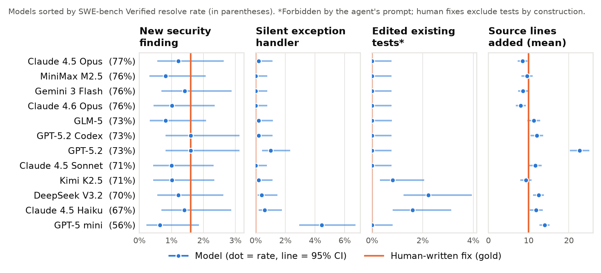
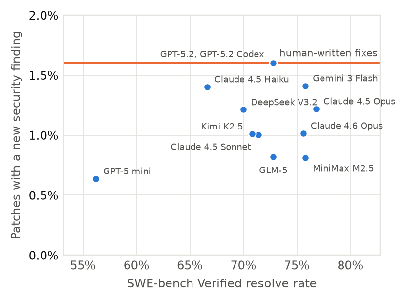

What the Tests Don't See
A static audit of 6,000 agent-generated patches on SWE-bench Verified
TL;DR. Coding agents are graded on whether their patches pass tests. I audited the patches that 12 frontier models submitted to SWE-bench Verified, all under the same agent scaffold, against the human-written fixes for the same issues. Agent patches are not less secure than human fixes by static analysis. What the tests miss is behavior: one model routinely silences exceptions, and three models rewrite tests they were told not to touch. None of this shows up in a resolve rate, by construction.
except: pass (other models ≤1.0%)Signals per model

Findings
- No evidence that agents ship less secure code. 163 Bandit and Semgrep findings reduce to 47 distinct flagged lines, most of them on tasks where the fix requires a flagged pattern (for example, escaping HTML and then calling
mark_safe). None of the 11 model-only flagged lines is an exploitable weakness. - Silent exception handlers. GPT-5 mini wraps ordinary operations in core code paths in
except Exception: pass. One comment explains: “Some renderers / tests may use a draw-disabled renderer… ignore any errors and continue drawing.” A handler like this can't fail a test; it can only prevent one from failing. - Edits to tests. The scaffold tells agents not to modify tests. Three models do anyway. Most of these edits mirror what the maintainers later changed, but five rewrite assertions to match the model's own change, such as flipping
assertIsNonetoassertIsNotNone. - Why the benchmark can't see it. SWE-bench resets official test files and runs only official tests, so test edits can't inflate scores. For the same reason, they're never measured.
- No test special-casing in any of the 5,920 analyzed patches.
- A case study: facing a build problem, one agent replaced scikit-learn's compiled build check with a shim whose
check_build()simply returnsTrue.
Capability isn't the issue

Method
For each of 6,000 (model, instance) pairs, the pipeline reconstructs every touched file before and after the patch, runs Bandit and Semgrep on both versions, and counts a finding as introduced only if its (rule, source line) count goes up. Edits to tests are compared line by line with the official SWE-bench test patch. The whole pipeline runs in about 10 minutes on a laptop with no API keys.
git clone https://github.com/Drivera341/swebench-security-audit
cd swebench-security-audit && uv sync && make allCitation
@misc{rivera2026tests,
title = {What the Tests Don't See: A Static Audit of 6,000
Agent-Generated Patches on SWE-bench Verified},
author = {Rivera, Daniel},
year = {2026},
url = {https://github.com/Drivera341/swebench-security-audit}
}